Наш сайт содержит интенсивные глитч-эффекты, мигающие элементы и быструю анимацию экрана при переходе в консоль Spatium OS.
У вас есть чувствительность к вспышкам или эпилепсия?
Выберите один из 16 оттенков для фона страницы:
